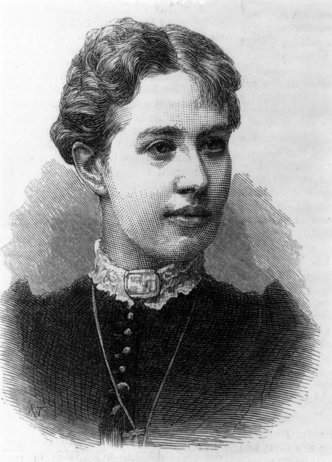

Профессор Соня
Читается подряд. Нажми на удар — откроется подробный разбор с источниками.
В усадьбе Полибино на детскую не хватило обоев. Стену оклеили листами лекций академика Остроградского по математическому анализу.Узнать подробнееСвернуть
Это были печатные лекции Михаила Остроградского по дифференциальному и интегральному исчислению. Софья потом вспоминала, что часами простаивала перед «таинственной стеной», пытаясь разобрать хоть отдельные фразы и найти порядок, в котором листы должны идти друг за другом. Многие формулы врезались ей в память раньше, чем она поняла их смысл.
Полибино — имение её отца, генерал-лейтенанта В. В. Корвин-Круковского, ныне Великолукский район Псковской области. Сегодня там музей Ковалевской.
Источники: «Русский мир», «Софья Ковалевская. Жизнь как уравнение», 14.01.2025; «Псковиана», «Ковалевская Софья Васильевна»; «Аргументы и факты — Петербург», 15.01.2026.
В российские университеты женщин тогда не принимали. В 1868 году Софья фиктивно вышла замуж, чтобы уехать учиться за границу.Узнать подробнееСвернуть
С 1866 года она брала частные уроки математики в Петербурге: доступ женщинам в Санкт-Петербургский университет был закрыт. Мужем стал выпускник Училища правоведения Владимир Ковалевский; за границей он занялся палеонтологией.
Источники: энциклопедическая статья «Ковалевская Софья Васильевна» (knowledge.su); журнал «Родина», 15.01.2025.
В Берлинский университет женщин не пускали. Четыре года её частно учил знаменитый математик Карл Вейерштрасс.Узнать подробнееСвернуть
Сначала, в 1869 году, был Гейдельберг: математика, лекции Кирхгофа и Гельмгольца. С 1870 по 1874 год — Берлин, где Вейерштрасс давал ей частные уроки, потому что в университет женщины не допускались.
Источники: энциклопедическая статья «Ковалевская Софья Васильевна» (knowledge.su); журнал «Родина», 15.01.2025.
В 1874 году Гёттингенский университет заочно присудил ей степень доктора философии — сразу за три работы.Узнать подробнееСвернуть
Работы представил Вейерштрасс. Одна из них дала теорему о существовании решений систем уравнений с частными производными — сегодня она называется теоремой Коши — Ковалевской и входит в университетские учебники. Софье было 24 года.
Источники: энциклопедическая статья «Ковалевская Софья Васильевна» (knowledge.su); НИЯУ МИФИ, «К 175-летию Софьи Ковалевской. „Математическая русалка“»; «Псковиана».
Дома доктору математики места не нашлось: в Петербургский университет не взяли, на Высших женских курсах преподавать не допустили.Узнать подробнееСвернуть
Почти на шесть лет она отошла от науки и занялась литературой и публицистикой. «Аргументы и факты» пишут, что на родине ей готовы были предложить лишь арифметику в младших классах гимназии.
Источники: энциклопедическая статья «Ковалевская Софья Васильевна» (knowledge.su); «Аргументы и факты — Петербург», 15.01.2026.
В ноябре 1883 года шведский математик Миттаг-Леффлер позвал её в Стокгольм. 30 января 1884 года она прочла там первую лекцию.Узнать подробнееСвернуть
Гёста Миттаг-Леффлер, сам ученик Вейерштрасса, предложил ей место приват-доцента в Стокгольмском университете — тогда Стокгольмской высшей школе. По условию первый год она читала лекции по-немецки, а со второго года — по-шведски.
Источники: «Узнай Москву», «Ковалевская Софья Васильевна»; «Аргументы и факты — Петербург», 15.01.2026; энциклопедическая статья (knowledge.su).
24 июня 1884 года её назначили профессором — сначала на пять лет. Ни одна женщина в мире до неё не вела кафедру математики.Узнать подробнееСвернуть

Портрет Ковалевской в лондонском еженедельнике The Illustrated London News, 1884 год, том 85, с. 121. Гравёр «R. T.». Библиотека Конгресса США, общественное достояние. Энциклопедия называет её первой в мире женщиной — профессором математики. В Стокгольме она читала лекции по математическому анализу и механике — на немецком и шведском языках.
Источники: «Узнай Москву»; энциклопедическая статья (knowledge.su); «Аргументы и факты — Петербург», 15.01.2026.
Задачу о волчке — как вращается тяжёлое тело вокруг закреплённой точки — математики решали больше ста лет. До конца удавалось просчитать только два случая.Узнать подробнееСвернуть
Уравнения движения вывел Леонард Эйлер. Он же нашёл первый случай, когда их можно решить до конца: тело закреплено в своём центре тяжести. Второй случай нашёл Жозеф Луи Лагранж: тело симметрично, как юла, а центр тяжести лежит на оси симметрии. Дальше никто продвинуться не мог.
Источники: НИЯУ МИФИ, «„Математическая русалка“»; энциклопедическая статья (knowledge.su).
Волчок Ковалевской — третий случай, когда вращение тяжёлого тела рассчитывается до конца.Узнать подробнееСвернуть
Находка дняУсловие оказалось странным: два главных момента инерции тела равны, а третий вдвое меньше их, и центр тяжести лежит не на оси симметрии, а в экваториальной плоскости. Ковалевская искала решения уравнений на комплексной плоскости — подход, который подсказал ей Вейерштрасс.
Попробуй сам в модели ниже: найди условие, при котором волчок перестаёт вести себя хаотично.
Источники: НИЯУ МИФИ, «„Математическая русалка“»; энциклопедическая статья (knowledge.su); журнал «Родина», 15.01.2025.
24 декабря 1888 года Парижская академия наук вручила ей премию Бордена — и подняла её с 3000 до 5000 франков.Узнать подробнееСвернуть
Работы на премию подавались анонимно, под девизом. Девиз Ковалевской: «Говори, что знаешь, делай, что должен, и пусть будет, что будет». Решение академиков было единогласным, а сумму увеличили из-за особых достоинств работы.
Источники: НИЯУ МИФИ, «„Математическая русалка“»; журнал «Стимул», «Математик прекрасного пола».
В 1889 году за продолжение той же темы Шведская академия наук дала ей премию короля Оскара II, а университет сделал её профессором пожизненно.Узнать подробнееСвернуть
Премия составляла полторы тысячи крон. Пожизненное звание профессора Стокгольмской высшей школы упоминают и «Узнай Москву», и НИЯУ МИФИ.
Источники: «Узнай Москву»; НИЯУ МИФИ; журнал «Родина», 15.01.2025.
В том же 1889 году Петербургская академия наук впервые избрала женщину членом-корреспондентом. Ради этого академии пришлось менять порядок избрания.Узнать подробнееСвернуть
Кандидатуру предложили П. Л. Чебышев, В. Г. Имшенецкий и В. Я. Буняковский — после того как было принято решение допускать женщин к избранию в члены-корреспонденты. Но присутствие женщины на заседаниях Академии по-прежнему считали недопустимым.
Источники: энциклопедическая статья (knowledge.su); журнал «Родина», 15.01.2025; «Аргументы и факты — Петербург», 15.01.2026.
Софья Ковалевская умерла в Стокгольме 10 февраля 1891 года от воспаления лёгких. Ей был 41 год.Узнать подробнееСвернуть
Она была и писательницей: «Воспоминания детства», повесть «Нигилистка», драма «Борьба за счастье», написанная вместе со шведской писательницей Анной Шарлоттой Леффлер.
Источники: журнал «Родина», 15.01.2025; энциклопедическая статья (knowledge.su).